¿Por qué gastar en viajes?
Viajar es algo que me apasiona profundamente porque cada aventura es una oportunidad para aprender y descubrir algo nuevo. Me encanta la sensación de llegar a un lugar desconocido y sumergirme en su cultura, desde probar su comida típica hasta explorar sus calles y paisajes únicos. Para mí, viajar es mucho más que simplemente cambiar de escenario; es una manera de conectarme con el mundo, ampliar mi perspectiva y salir de mi zona de confort. Cada destino tiene su propia historia y, a través de los viajes, me siento parte de algo mucho más grande.
Lo que más valoro de viajar son los recuerdos que me llevo conmigo y las lecciones que aprendo en cada experiencia. Desde los momentos de tranquilidad observando un atardecer en la playa, hasta las situaciones inesperadas que ponen a prueba mi paciencia y capacidad de adaptación, cada viaje me enseña algo nuevo sobre mí misma. Viajar me ha mostrado lo importante que es ser flexible, abrirse a lo desconocido y apreciar las pequeñas cosas. Esas memorias y enseñanzas son lo que realmente hacen que cada viaje sea inolvidable, y me motivan a seguir explorando el mundo.
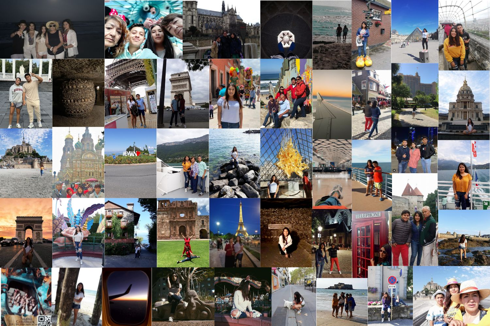Lo mejor de cada país
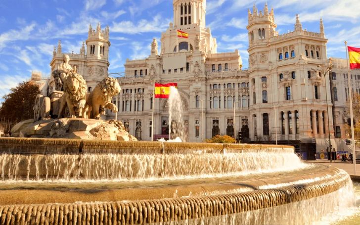España
De España, lo que más disfruté fue la increíble diversidad cultural que se encuentra en cada ciudad. En Madrid, me fascinó su vida urbana vibrante y la combinación de lo moderno con lo tradicional. Barcelona me encantó por su arquitectura única, especialmente las obras de Gaudí. En Sevilla, disfruté de su atmósfera cálida y su flamenco. Toledo me cautivó con su rica historia y sus callejones antiguos. Valencia tiene un equilibrio perfecto entre playa y ciudad, y su paella es inolvidable. Sin duda, volvería a España, ya que cada ciudad tiene su propio encanto.
Francia
Francia es uno de mis destinos favoritos, y no solo por haber nacido en París. París es elegante, con su historia y monumentos icónicos. Annecy es un rincón de ensueño rodeado de lagos y montañas, mientras que Rennes y Le Mans me ofrecieron una visión más tranquila y auténtica de la vida francesa. En Saint-Malo y Mont Saint-Michel, me asombró la belleza natural de la costa. Cada rincón de Francia me dejó un recuerdo especial, y sin duda volvería para seguir descubriendo más.
Suecia
En Estocolmo, lo que más me gustó fue su mezcla de historia y modernidad. Los museos y la arquitectura hacen que esta ciudad sea un lugar fascinante para explorar. Además, la limpieza y el orden en las calles me dejaron una muy buena impresión. Suecia tiene una tranquilidad que invitaría a cualquiera a regresar.
Dinamarca
Copenhague es una ciudad encantadora, llena de bicicletas, colores y un ambiente acogedor. Sus canales y la famosa sirenita hacen de este destino algo mágico. El equilibrio entre modernidad y tradición en Dinamarca es impresionante, y me encantaría volver para seguir explorando sus rincones.
Países Bajos
Holanda fue una sorpresa agradable. Sus paisajes llenos de molinos y tulipanes son una postal hecha realidad. Lo que más me gustó fue la amabilidad de la gente y su estilo de vida relajado. Definitivamente, volvería para explorar más de sus ciudades.
Alemania
Rostock en Alemania es una ciudad portuaria con un encanto particular. Me encantó su tranquilidad y su acceso al mar Báltico. Alemania es un país lleno de historia y cultura, y Rostock me dejó con ganas de conocer más del norte del país.
Finlandia
Helsinki tiene una atmósfera minimalista y moderna, pero también respeta mucho la naturaleza que la rodea. Me encantaron sus parques y la frescura del aire. Volvería sin dudarlo para seguir conociendo más de este fascinante país.
Estonia
Tallin es una ciudad medieval sacada de un cuento de hadas. Sus murallas, torres y calles empedradas crean una atmósfera mágica. La historia que se respira en cada rincón me hizo enamorarme de este lugar, y definitivamente, me encantaría regresar.
Rusia
San Petersburgo es una ciudad monumental. Sus palacios, museos y catedrales son imponentes y llenos de historia. Aunque fue una experiencia intensa, no estoy segura de que regresaría pronto, ya que hay mucho más por explorar en otras partes del mundo.
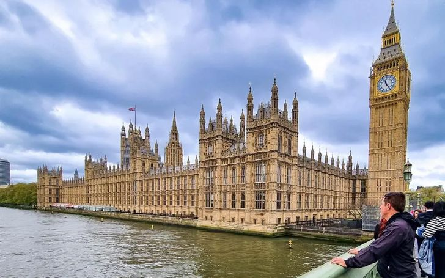
Reino Unido
Londres siempre es un destino emocionante. Su energía, monumentos y diversidad cultural hacen que cada visita sea diferente. Sin duda, volvería a esta ciudad, ya que siempre hay algo nuevo por descubrir.
Suiza
Lausana en Suiza es simplemente espectacular. Sus paisajes montañosos y el lago Ginebra hacen que cada rincón sea una postal. La tranquilidad y la limpieza de la ciudad me impresionaron, y sin duda, volvería para disfrutar de la naturaleza suiza.
Estados Unidos
De Estados Unidos, lo que más disfruté fue la diversidad de experiencias en cada ciudad. Orlando fue mágico por los parques temáticos, mientras que Dallas me sorprendió con su cultura sureña. McAllen es un destino perfecto para hacer compras. Sin duda, volvería a explorar más de este país tan diverso.

México
Deje México para el final ya que ademas de ser mi hogar es un país que me ha fascinado profundamente, no solo por sus paisajes y ciudades, sino por su riqueza cultural inigualable. Cada estado, cada ciudad, y cada pequeño rincón de México tiene algo especial que ofrecer, y eso es lo que lo convierte en un destino tan cautivador. Su diversidad cultural se refleja en su gastronomía, tradiciones, música, y la calidez de su gente.
Veracruz, por ejemplo, tiene una energía única. Las ciudades costeras como Veracruz de la Llave y Coatzacoalcos están llenas de historia y tradiciones, desde los danzantes tradicionales hasta la alegría de sus carnavales. Orizaba y Xalapa son destinos más tranquilos, rodeados de montañas y con un encanto natural que siempre invita a regresar.
Oaxaca es otro de esos lugares mágicos que me dejó sin palabras. Su comida es considerada una de las más ricas y variadas del país. Desde los moles, las tlayudas, hasta el mezcal, cada platillo está lleno de historia. Además, su arquitectura colonial y la vibra de sus mercados llenos de artesanías tradicionales hacen que te sumerjas en una cultura profundamente arraigada.
En Jalisco, la cuna del mariachi y el tequila, sentí una conexión especial con las tradiciones mexicanas. Guadalajara es una ciudad vibrante donde la modernidad se encuentra con lo tradicional, y eventos como el Día de los Muertos se viven con gran fervor. Aquí es fácil ver cómo la música, la danza, y el orgullo por las raíces mexicanas siguen vivos.
Otro estado que me encantó fue Chiapas, con lugares como Palenque, donde las ruinas mayas se alzan imponentes en medio de la selva. La espiritualidad y el misticismo que se sienten en sitios como este son indescriptibles. Los paisajes naturales, como las Cascadas de Agua Azul o el Cañón del Sumidero, hacen que Chiapas sea uno de los destinos más espectaculares para los amantes de la naturaleza.
San Luis Potosí me impresionó con su magia surrealista en lugares como Xilitla, donde los Jardines de Edward James parecen sacados de un sueño. La Huasteca Potosina, con sus cascadas y paisajes verdes, es un paraíso natural que invita a la aventura. Es un rincón de México que definitivamente quiero seguir explorando.
La Ciudad de México, por su parte, es un mosaico cultural en sí misma. Es una ciudad enorme, pero lo que más me gusta es cómo en cada colonia o barrio puedes encontrar una historia distinta, desde lo bohemio de Coyoacán hasta lo cosmopolita de Polanco. Aquí se respira arte, con museos de clase mundial como el Museo Nacional de Antropología o el Museo Frida Kahlo. Sin duda, es un lugar donde siempre hay algo nuevo por descubrir.
En Yucatán, me enamoré de Mérida y de las ruinas de Chichén Itzá, una de las siete maravillas del mundo moderno. Además, la cultura maya sigue presente, no solo en las pirámides y cenotes, sino en la vida cotidiana de sus habitantes, quienes mantienen vivas sus lenguas y tradiciones ancestrales.
Cada vez que conoxco un nuevo lugar de México, siento que apenas estoy descubriendo la superficie de su vasta riqueza cultural. Es un país que nunca deja de sorprenderme, y al que siempre querré regresar, ya que en cada visita aprendo algo nuevo y descubro más de sus raíces. Desde las festividades populares hasta los paisajes naturales y las ciudades coloniales, México es un tesoro cultural que, sin duda, vale la pena explorar en su totalidad.
Imágenes de México
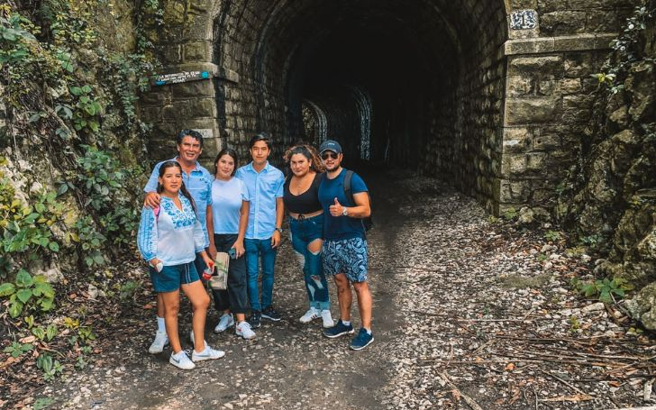 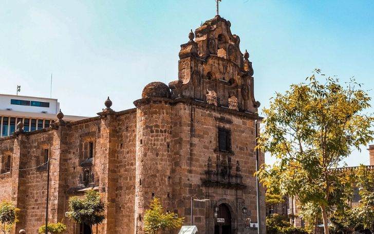 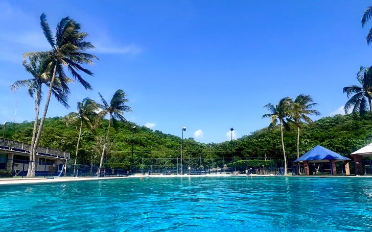
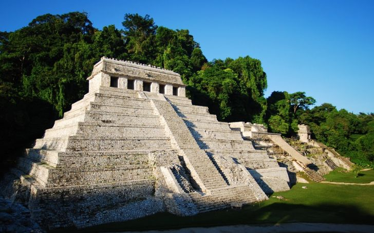
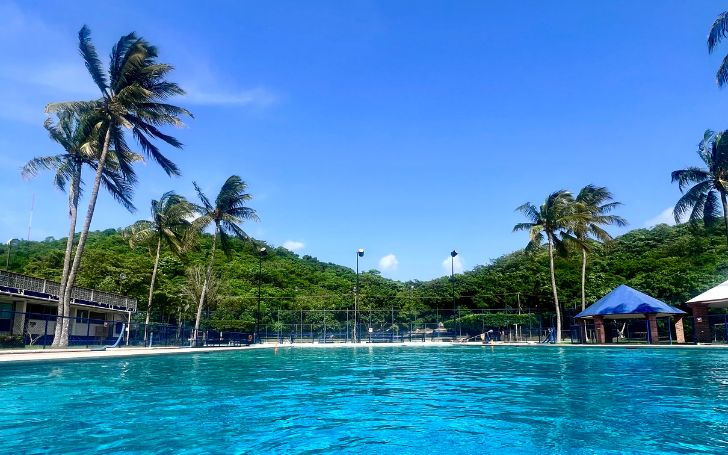
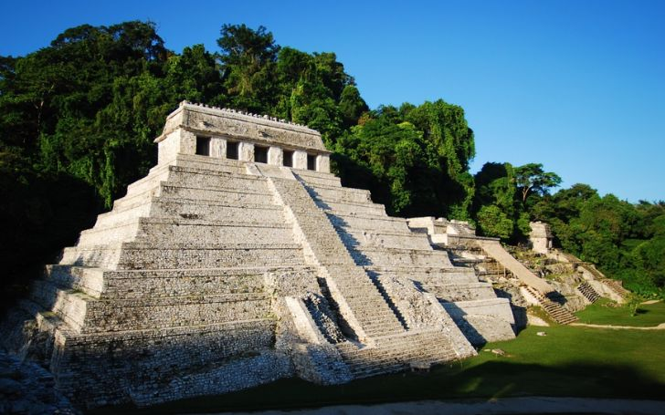
 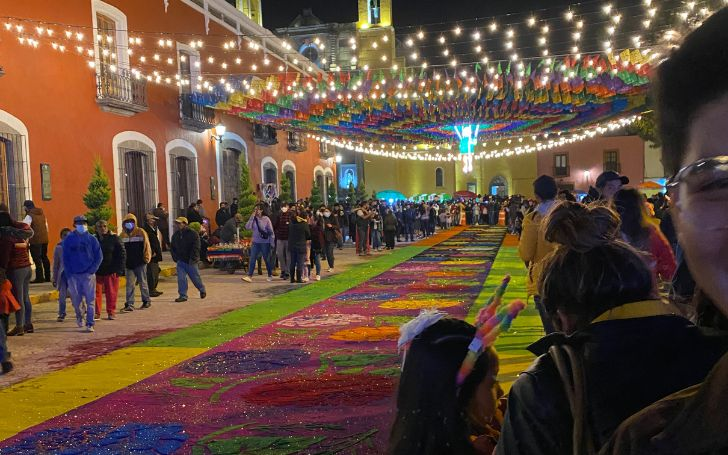
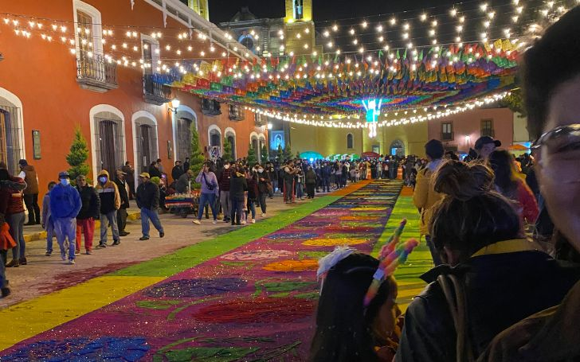
%20(728%20x%20455%20px).jpg) 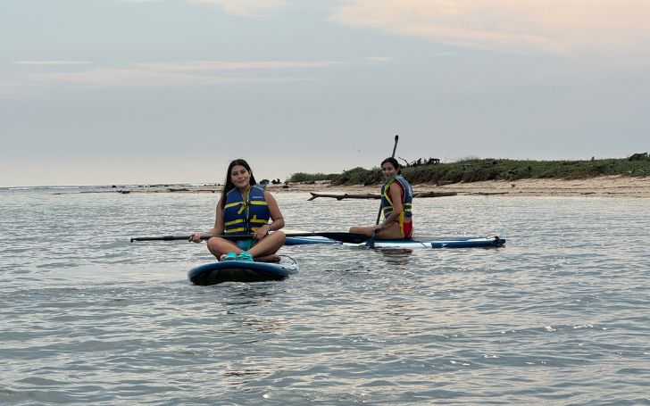
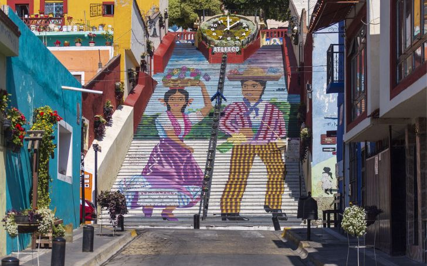
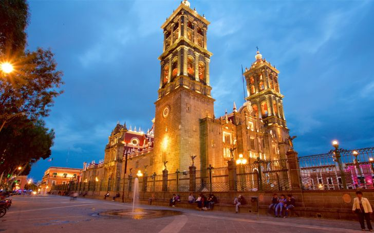
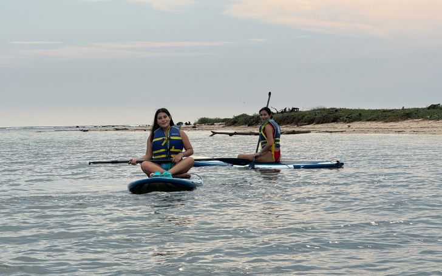
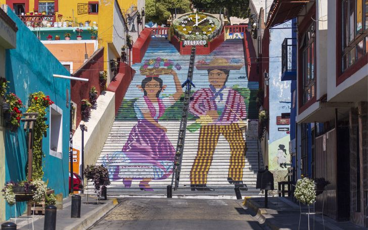
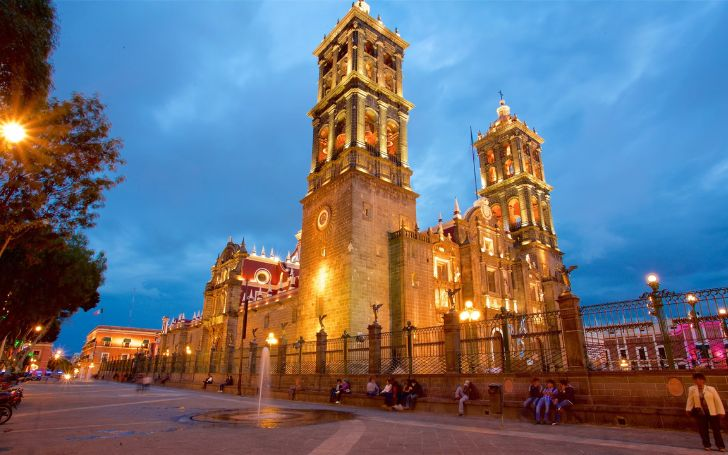